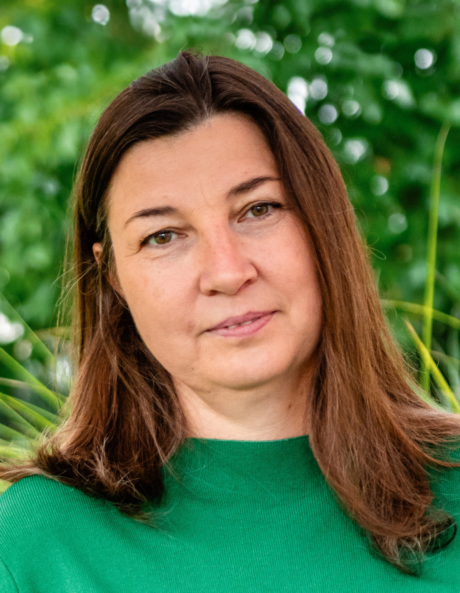

♡
Individuální přístup
Každá žena je jedinečná. Péči přizpůsobuji vašim potřebám a životní situaci.
Jemná péče pro ženy, děti a rodiny
S láskou a respektem provázím ženy těhotenstvím, porodem a obdobím po porodu. Pomáhám navrátit tělu i duši rovnováhu prostřednictvím kraniosakrální terapie.

Každá žena je jedinečná. Péči přizpůsobuji vašim potřebám a životní situaci.
Pracuji s respektem k vašemu tělu, emocím i osobnímu tempu.
Více než 20 let praxe porodní asistentky a terapeutky.
O mně
Jako porodní asistentka pečuji o ženy a děti a doprovázím celé rodiny na jejich cestě rodičovstvím. Mám ráda lidi a fascinuje mě rozmanitost životních příběhů.
Pracovala jsem na porodních sálech Fakultní Thomayerovy nemocnice, v Centru aktivního porodu FN Bulovka i v Horské nemocnici Vrchlabí. Od roku 2000 působím jako samostatná porodní asistentka.
V roce 2018 jsem absolvovala výcvik v kraniosakrální osteopatii s biodynamickým přístupem. Tato jemná metoda je dnes přirozenou součástí mé práce.
Terapie
Jemná metoda, která podporuje přirozené regenerační procesy těla, uvolňuje napětí a pomáhá navracet rovnováhu.
Péče
Komplexní péče během těhotenství, porodu i šestinedělí s důrazem na bezpečí, respekt a individuální potřeby ženy.
Kontakt
Ozvěte se mi s dotazem nebo se domluvme na osobní konzultaci.